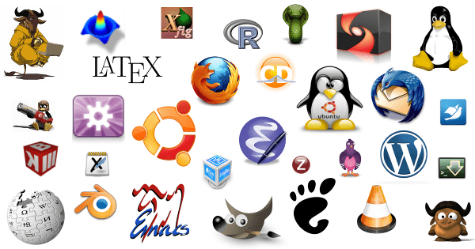

El software libre es un concepto que se refiere a programas informáticos cuyo código fuente es accesible para cualquier persona, lo que significa que los usuarios tienen la libertad de usar, estudiar, modificar y distribuir el software de acuerdo con sus necesidades. Esto promueve la colaboración, la transparencia y la libertad en el mundo del software.
La historia del software libre se remonta a las décadas de 1960 y 1970, cuando programadores y científicos comenzaron a compartir y colaborar en proyectos de software. En 1983, Richard Stallman fundó la Free Software Foundation (Fundación para el Software Libre) y lanzó el proyecto GNU (GNU's Not Unix), con el objetivo de desarrollar un sistema operativo libre y completo.
En 1991, Linus Torvalds creó el núcleo Linux, que se convirtió en un componente esencial del sistema operativo GNU/Linux. Esta combinación de software libre ha tenido un impacto significativo en la industria de la informática y ha llevado al desarrollo de una amplia variedad de aplicaciones, sistemas operativos y proyectos de código abierto.
El software libre es una filosofía que promueve la libertad de uso, modificación y distribución de programas informáticos. Algunas de las ventajas clave incluyen la transparencia, la flexibilidad y la colaboración. Los usuarios tienen la libertad de estudiar, adaptar y compartir el software, lo que fomenta la innovación y la seguridad en la programación.
Para los profesionales de la informática, el software libre ofrece oportunidades excepcionales. Permite acceder al código fuente, facilitando la depuración y la personalización de programas. Los informáticos pueden contribuir a proyectos de código abierto y adquirir habilidades valiosas mientras trabajan en soluciones innovadoras.
El software libre se utiliza en una amplia variedad de aplicaciones, desde sistemas operativos como Linux hasta herramientas de desarrollo como Git. También es esencial en servidores web, bases de datos y aplicaciones empresariales. La comunidad de software libre sigue creciendo, brindando soluciones económicas y de alta calidad en sectores diversos.
En resumen, el software libre ofrece beneficios significativos en términos de libertad y flexibilidad. Para los informáticos, representa una plataforma para el aprendizaje y la innovación. En la actualidad, su uso es amplio y diverso, contribuyendo a la eficiencia y a la disponibilidad de soluciones informáticas asequibles y confiables.